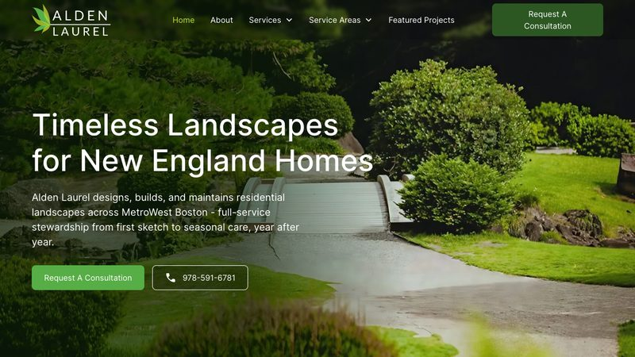
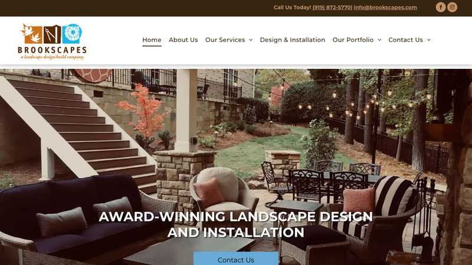

Alden Laurel
Concord, MA · https://aldenlaurel.com · loads in 0.56s

Why it is here: Has a “Request a Consultation” flow and an “Areas We Serve” list of six Massachusetts towns.
What it does well
- The hero “Timeless Landscapes for New England Homes” speaks directly to the local market.
- A featured-projects gallery shows real work, which matters for a visual trade.
- The service area list (Concord, Lincoln, Lexington, Weston, Wellesley, Sudbury) is explicit.
What could be better
- No online booking calendar — consultation requests go through a form.
- No prices or project-cost guidance are published.
Brookscapes
Raleigh, NC · https://brookscapes.com · loads in 0.86s

Why it is here: Has a contact form with name, email, address, phone and message fields, plus a portfolio section.
What it does well
- The H1 names the three main towns it serves (Raleigh, Apex, Wake Forest), which is good local SEO.
- A portfolio section shows completed projects.
- The contact form captures the project address, which helps with estimates.
What could be better
- No online booking or price estimate tool.
- No review rating or count is visible in the page HTML.
Want a landscaping website like these?
Our template pack includes a ready-to-edit landscaping template with tap-to-call, service area, FAQ, contact form and LocalBusiness schema — plus nine other trades.
Get the 10-template pack for $49
Or start with the free guides.